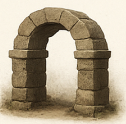
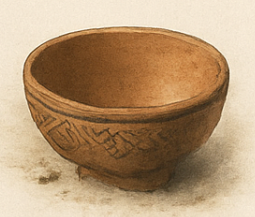
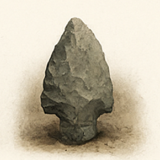
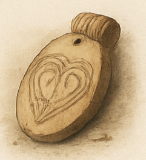
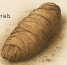

Archaeology

Stone Arch
Stone Arch
- Name
- Stone Arch
- Material
- Limestone blocks
- Size/Weight/Shape
- ~1.2 m span; semicircular arch; est. >150 kg
- Estimated Age
- ~2,000 years (stratigraphic association)
- Preservation State
- Complete; minor edge chipping
- Location Found
- Temple approach, Trench D, 0.9 m depth
- Use and Function
- Architectural passage element
- Likely Purpose
- Threshold or small gate
- Evidence of Use
- Footpath wear on base stones
- Manufacture Clues
- Block dressing marks; lime mortar traces
- Cultural Context — Found With
- Carved paving stones; ceramic roof tiles
- Burial or Habitat Context
- Collapsed wall horizon within courtyard fill
- Symbolism
- None recorded on blocks; no inscriptions
- Comparison
- Similar arches in Site Cluster B (Phase II)

Ceramic Bowl
Ceramic Bowl
- Name
- Earthenware Bowl
- Material
- Low-fire earthenware; iron-rich slip
- Size/Weight/Shape
- Ø ~18 cm; shallow hemispherical; ~420 g
- Estimated Age
- ~1,200 BP (typological)
- Preservation State
- Complete; rim abrasion; soot on exterior
- Location Found
- Domestic block A; room floor, near hearth
- Use and Function
- Food preparation/serving
- Likely Purpose
- Household vessel
- Evidence of Use
- Interior residue ring; exterior soot band
- Manufacture Clues
- Coil-built; paddle-smoothed; faint band motif
- Cultural Context — Found With
- Grinding stone fragment; charred seeds
- Burial or Habitat Context
- Domestic occupation layer
- Symbolism
- Geometric banding; non-figurative
- Comparison
- Comparable to Village Type R2 bowls

Obsidian spearhead
Obsidian Spearhead Fragment
- Name
- Obsidian Spearhead Fragment
- Material
- Volcanic glass (obsidian)
- Size/Weight/Shape
- 7–8 cm; leaf-shaped; ~18–20 g
- Estimated Age
- ~2,100 BP (contextual)
- Preservation State
- Partial; tip loss; retouched edges
- Location Found
- Ridgefield Site B; Layer IV silts
- Use and Function
- Projectile point component
- Likely Purpose
- Hunting spearhead
- Evidence of Use
- Micro-chipping on lateral edges; polish near haft
- Manufacture Clues
- Pressure flaking; base thinning for hafting
- Cultural Context — Found With
- Basalt flakes; charcoal flecks; small fauna
- Burial or Habitat Context
- Open-air camp horizon above hearth lens
- Symbolism
- None observed
- Comparison
- Matches Late Archaic point Type O-3
Anthropology
Human skull
Human Skull (Adult)
- Name
- Adult Human Skull
- Material
- Cranial bone (human)
- Size/Weight/Shape
- Average adult; ~1.2 kg
- Estimated Age
- Context ~800–900 BP (no direct AMS)
- Preservation State
- Complete; minor sutural erosion
- Location Found
- Burial mound sector C; locus 7
- Use and Function
- —
- Likely Purpose
- —
- Evidence of Use
- —
- Manufacture Clues
- —
- Cultural Context — Found With
- Beads; shell fragment; ceramic sherd
- Burial or Habitat Context
- Primary interment; supine
- Symbolism
- Not applicable
- Comparison
- Morphology consistent with adult cohort at site

Bone pendant
Bone Pendant
- Name
- Carved Bone Pendant
- Material
- Animal bone
- Size/Weight/Shape
- Oval; ~5 cm tall; ~14 g
- Estimated Age
- ~700 BP (contextual)
- Preservation State
- Complete; surface wear
- Location Found
- Cave sector E; alcove deposit
- Use and Function
- Personal adornment
- Likely Purpose
- Pendant with suspension hole
- Evidence of Use
- Polish on loop; abrasion on incised motif
- Manufacture Clues
- Incised spiral; drilled suspension
- Cultural Context — Found With
- Bead cluster; textile scrap
- Burial or Habitat Context
- Secondary deposit within cave fill
- Symbolism
- Geometric spiral; non-figurative
- Comparison
- Comparable pendants in Cluster B assemblage

Burial bundle
Burial Bundle (Wrapped)
- Name
- Wrapped Burial Bundle
- Material
- Textile layers; organic fibers
- Size/Weight/Shape
- ~60 × 20 cm; elongated form
- Estimated Age
- ~1,200 BP (contextual)
- Preservation State
- Partial; fragile textile layers
- Location Found
- Domestic floor 2; near hearth stones
- Use and Function
- Mortuary wrapping
- Likely Purpose
- Containment of remains
- Evidence of Use
- Soot staining on outer wrap
- Manufacture Clues
- Simple tabby weave; Z-twist warp
- Cultural Context — Found With
- Charred seeds; spindle whorl fragment
- Burial or Habitat Context
- Domestic occupation; adjacent to hearth
- Symbolism
- None recorded
- Comparison
- Matches weave density of Cluster B textiles